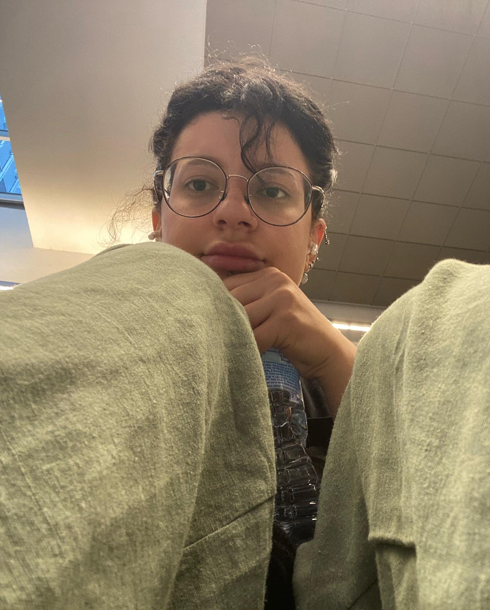

My resume
Lizi Khandaveli

On the pathway of learning
BY this file I will try to represent myself as much as I have learnt so far (which is not much, but still)
It won't be easy but I'll try
Education
- 2009-2021 - Public School #123 (Tbilisi, Georgia)
- 2018 - Lycee Francois Magendie (Bordeaux, France)
- From 2021 - Ilia State University (Tbilisi, Georgia)
Work Experience
Pre-sales representative . Company : All Funeral Services . Digitazinf/ Communicating with death care industry.
Senior Sales representative . Company: Future Bridge. Senior sales representative responsible for sponsors on Tech development conferences.
English-Russian customer support. Company: Teleperformance (Majorel).
Resolving various customer issues and requests.
Front office - Hotel receptionist.
Company: Biltmore Hotel Tbilisi
Operating reception and communication with guests
Front desk supervisor/ Bartender and Barista
Company: Moxy Tbilisi (Marriott hotels)
Operating front desk and bar. Communicating with guests and dealing with financial reports.Responsible for night Audit
Shop owner and manager.
Management of Several personal shops. Monitoring the work of employees.
Even from Abroad taking care of the workplace and responding to any type of issue.
Tour guide
Personal tour guide in Tbilisi for foreigners.
Telling detailed history of Georgia and Tbilisi, Answering the questions for their reports.
Volunteering
Year 2018
Translating phone calls and meetings at hospitals and lawyers offices.
Free aid for people in need, who had Problems with health or any type of documents and could not speak nor French nor English. (Mostly requested by Georgian and Ukrainian people)
English-Georgian Translator Company: Geo Import
Year 2017
Translating of the phone calls and meetings with foreign companies about place of residence of construction workers for different projects (Last project is hydroelectric power station in region of Svaneti)
Skills
Multitasking:
Working under stressful conditions;
Huge experience of working with a variety of people; High Communication skills;
Strong leadership abilities;
Easy learner.
Proficinecy in 5 Languages
Certificates
Institut Polytechnique de Paris - Étudier en France: French Intermediate course B1- B2
Institut Polytechnique de Paris - Comprendre la France, Advanced French Language & Culture
University of Edinburgh - Introduction to Philosophy
Thank you for yoour attention!
Contact Me